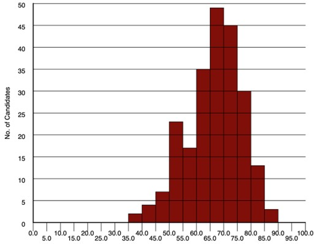

MCQ Exams
Some exams consist of Multiple Choice Questions (MCQs), and this will be indicated in module materials including the module outline. These exams are graded like any other, and this page explains that grading process.
How are MCQ exams graded?
The School of Psychology follows a set process when converting your score on an MCQ examination into a grade to be used on a module. It is important to realise that neither the number correct nor your percentage correct can be used as your final mark, and that a grading process is needed to ensure that the examination is fair and comparable to other assessments and other years. This process is similar to that used in other universities across the world, and is applied individually to every module’s MCQ examinations (this process is not applied to smaller MCQ tests conducted during the semester on the DLE).
How is my raw score derived?
In MCQ tests, questions typically have several possible answers, one of which is correct (or, in some cases, the ‘best correct’). You get 1 if you choose the correct answer, and 0 if you do not, or if you leave it blank. As you have at least a 25% chance of guessing the correct answer it is better to guess than leave a question unanswered, and if you answer randomly you will get around 25% correct. We do not use any form of ‘negative marking’ or ‘guessing correction’, so the number you get correct is your raw score. This is not the final grade that you will get, though.
Why can’t the raw score be used as the grade?
If there were 100 items, your raw score would be the total correct out of 100, and would look like a percentage as it could range from 0 to 100. If there were fewer items, the percentage correct could still be calculated. However, this cannot be used as the grade for the assessment because academic grades are not really percentages.
What are academic grades?
Academic grades are qualitative categories assigned to different levels of achievement. We use the grades A+ down to D-, then F+, F and F-. These are assigned numerical values to allow them to be combined over different assessments. A Pass on an undergraduate module is 40, and our minimum passing grade is D- (42). An Upper Second is a grade of B- (62), B (65) or B+ ( 68). Our First class grades are A- (77), A (88) and A+ (100). These grades are described further here.
If we used the raw score, only perfectly correct MCQ scores would get A+. We want to award A+ to excellent performance but do not expect it to be perfect, so we cannot use the raw score as the academic grade. Similarly, we do not know how hard the test is, so do not know that 42 is the score needed to pass. It might be 30, or 50. If we stuck to 42 then we might have to fail students who have done quite well on the test compared to some other students.
How does a raw score turn into a grade?
When we create an MCQ, we do not know how difficult the questions are. We think that you should in principle be able to answer them all correctly if you knew the course material perfectly, but do not really expect anyone to manage that. All we know is that the scores put students into rank order, with the best student scoring highest, and the worst student scoring lowest. Here is an example of the distribution of percentage correct scores on an MCQ test:

You probably recognise this as a normal distribution (slightly skewed, with a small tail of weak scores). Notice that the highest scores are in the 85-90 column, and that no-one gets 100% correct. Every time a module uses an MCQ examination, the Module Leader has to decide what thresholds corresponds to an A+ and a D- grade. This will vary from exam to exam, depending on the scores students actually achieved.
First we decide what the minimum score needed to get an A+ grade is, and in this particular example we might say that it was 85. On this exam, all marks of 85 and above would be assigned A+ (100). This threshold may well differ from other exams and modules.
Next we decide what the minimum score needed to get a D- grade is. In this example, we might set it to 40, so that everyone scoring 40 or above passes. Again, this may well differ on another exam.
Having set those points, we know that there are 45 points between the bottom of the lowest grade D- and the top of the second highest grade, A. We then divide this range into eleven nearly equal parts for the eleven grades D-, D, D+, C-, C, C+, B-, B, B+, A-, and A. This means that the ‘bins’ for each grade would be four points wide, giving us this conversion table:
| Raw scores | Grade |
|---|---|
| 40-43 | D- |
| 44-47 | D |
| 48-51 | D+ |
| 52-55 | C- |
| 56-59 | C |
| 60-63 | C+ |
| 64-67 | B- |
| 68-71 | B |
| 72-75 | B+ |
| 76-79 | A- |
| 80-84 | A |
| 85-100 | A+ |
As eleven times four is 44 and we have 45 points to split up, the extra point has been added to the A bin, making it five wide instead of four. The Module Leader decides which grades to add these ‘spare’ points to, so some may be wider than others.
What about the scores below the passing score?
There will never be many of these, so the Module Leader decides failing grades individually. In this example, there were two such scores, both in the 35-40 bin. As in this example these are close to the pass mark, they would probably both get F+ (38) grades. If there had been a much lower score, such as 25 or 20, it might have been graded F (25) or F- (15).
Do we use the same conversion table for every exam?
No, the conversion table has to be worked out every year for every examination. This is because we always change the questions each time. Sometimes this is needed because the module content has changed, but we also look at how each question was answered. The key thing is to make sure that a question lets us distinguish stronger performance from weaker performance.
If a question is too easy, with everyone getting it correct, there is no point asking it because it does not help us distinguish between better and poorer levels of knowledge. Similarly, a question that is too hard, with very few correct answers, is not able to distinguish students. Any question where strong and weak students perform equivalently is not doing a good job of assessment so needs to be improved or replaced.
We also check the correlation between each question and the MCQ total. The better a student’s performance, then the more likely they are to have got each question correct, so ideally these correlations should be positive and strong. Any question with a weak or negative correlation therefore needs to be improved or replaced.
Different exams also might have different numbers of questions, or there might have been other things affecting student performance, so the distribution can change from year to year and from module to module. For all these reasons, it would not be fair on students to use the same conversion table for every examination.